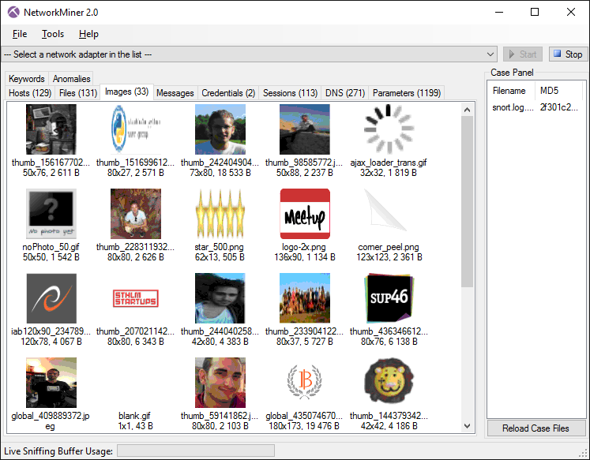
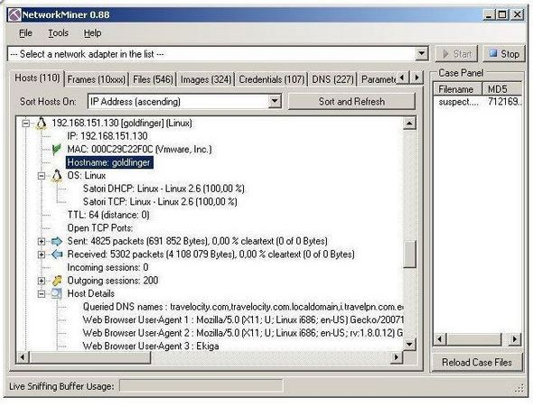

NetworkMiner
NetworkMiner- 一句话描述：一个开源的网络取证分析工具
- Logo
- 概述
- 有时，不仅需要分析网络流量。软件安全公司Netresec 的NetworkMiner是一种基于Windows的网络取证分析工具，设计用来收集有关网络中的主机和数据，而非流量。它能够抓包甚至解析PCAP文件，以帮助用户监测网络中主机的OS,主机名，以及开放端口。此工具方便文件、证书的重组传输，而无需耗费额外的流量
- 功能
- 在线online
- 应用领域
- 网络取证分析=
Network Forensic Analysis - 被动的网络嗅探=
passive network sniff - 抓包=
packet capturing
- 网络取证分析=
- 用于分析
- 操作系统operating systems
- 会话sessions
- 主机名hostnames
- 开放端口open ports
- 应用领域
- 离线offline
- 解析
PCAP文件- 用于重新生成/汇编成要发送的文件和证书
- 解析
- 在线online
- 图

- 
- 